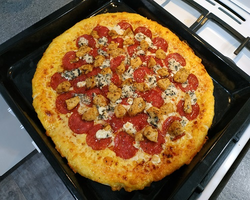
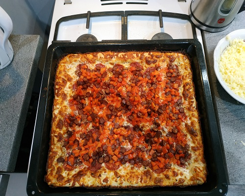
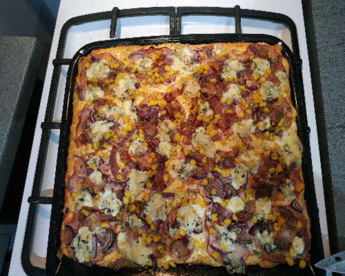

Mam na imię Jacek. Pracuję jako magazynier, jestem informatykiem samoukiem oraz uczę się na frontend developera.
Moją pasją są gry komputerowe, pisanie stron internetowych oraz właśnie gotowanie.
Lubię też obejrzeć dobry film.
Nieco o przepisach
Przepisy, które prezentuję, są inspirowane kuchnią amerykańską oraz włoską, ale też tradycyjną polską.
Pomysły brałem także z kilku kanałów na youtubie i zmodyfikowałem o swoje przemyślenia.
Niektóre są też całkowicie moim pomysłem, a więc zapraszam serdecznie niżej, po wiecej. ;)
Ciasto na pizzę:
Składniki:
350g mąki typ 0
150ml ciepłej wody
50ml mleka
7g drożdży instant lub 25g świeżych
1 łyżeczka cukru
1/2 łyżeczki soli
Olej lub oliwa
Przepis:
Mieszamy suche składniki ze sobą.
Dodajemy mokre i dokładnie wyrabiamy ciasto.
Układamy ciasto w naczyniu i zalewamy tłuszczem by je pokryć i odstawiamy na godzinę.
Porada:
Jeśli nie jesteśmy pewni czy pizza jest wypieczona, wystarczy skontrolować spód po 10 minutach.
Pizza Szefa:
Składniki:
Sos pomidorowy
Ser cheedar
Oregano do smaku
25 plastrów salami
Słodki sos chili
1 pierś kurczaka w przyprawie gyros(Kamis)
Ser pleśniowy Grand Blue lub Rockpol
Warzywa(opcjonalne)
Przepis:
Kroimy kurczaka w kostkę i obtaczamy w przyprawie. Smażymy tylko do utraty surowości.
Składniki nakładamy w kolejności podanej powyżej. Sosem chili smarujemy salami.
Pieczemy w 200°C, grzanie góra/dół, 9-12 min, 2 poziom piekarnika licząc od dołu.

Pizza Torino:
Składniki:
Sos pomidorowy
Ser cheedar
Oregano do smaku
25 plastrów salami
Słodki sos chili
2 kabanosy
1 średnia papryka
Szczypta soli i pieprzu
Przepis:
Składniki nakładamy w kolejności podanej powyżej. Sosem chili smarujemy salami.
Pieczemy w 200°C, grzanie góra/dół, 9-12 min, 2 poziom piekarnika licząc od dołu.

Pizza Kebab:
Składniki:
Sos pomidorowy
Ser cheedar
Oregano do smaku
Mięso Kebab
Frytki
1 pomidor
1 czerwona cebula
Szczypta soli i pieprzu
Przepis:
Nakładamy wszystko poza frytkami i warzywami.
Pieczemy w 200°C, grzanie góra/dół, 9-12 min, 2 poziom piekarnika licząc od dołu.
W czasie gdy pizza się piecze, smażymy frytki i kroimy warzywa.
Wyciągamy pizzę oraz nakładamy resztę składników i doprawiamy solą i pieprzem.
Pizza Wiejska:
Składniki:
Sos pomidorowy
Ser
Szynka w plastrach
1/2 puszki kukurydzy
1 cebula
Boczek w plastrach
Ser pleśniowy
Szczypta soli i pieprzu
Szczypta majeranku
Przepis:
Składniki nakładamy w kolejności podanej powyżej.
Pieczemy w 200°C, grzanie góra/dół, 9-12 min, 2 poziom piekarnika licząc od dołu.

Bułki:
Składniki:
400g mąki typ 650-680
40g masła
150ml ciepłego mleka
100ml ciepłej wody
5g soli
10g cukru
25g świeżych drożdzy lub 7g suchych
1 żółtko
Sezam
Przepis:
Mieszamy suche składniki ze sobą.
Roztapiamy masło.
Dodajemy mokre i dokładnie wyrabiamy ciasto.
Formujemy 4 bułki i układamy na blachę na papierze do pieczenia.
Po godzinie wyrastania smarujemy bułki żółtkiem i sypiemy sezamem.
Pieczemy w 200°C, grzanie góra/dół, 12-15 min, na środku piekarnika.